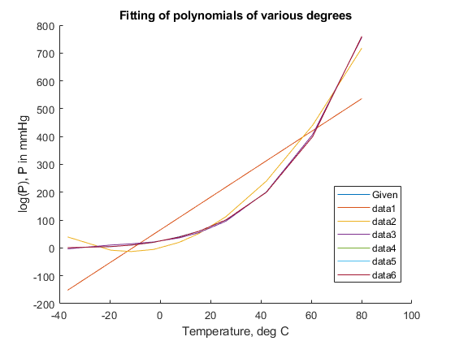

Question 3 Harikrishnan R N, 18CHE147
Here I have presented the code to solve question 3 of assignment
Contents
Solving for First part:
We will first define the arrays of given data : y is the array with the known values of ln(P)
y = [1;5;10;20;40;60;100;200;400;760] ; % T is the array with the known temperature values (T in degC) ; T = [-36.7;-19.6;-11.5;-2.6;7.6;15.4;26.1;42.2;60.6;80.1]; % There are 10 data points. To fit a polynomial, we should take care that % the polynomial is not overfitting the data. % Let the degree of polynomials vary from 1 to 10 warning('off','MATLAB:polyfit:PolyNotUnique') warning('off','MATLAB:polyfit:RepeatedPointsOrRescale') polys = zeros(6,1) ; disp('The plots for different fits on the data : ') hold on plot(T,y) xlabel('Temperature, deg C') ylabel('log(P), P in mmHg') title('Fitting of polynomials of various degrees') lgd = legend('Given'); lgd.Location = 'best'; disp(['Since the number of data points is small, we will fit curves till degree = 6']) for deg = 1:length(polys) p = polyfit(T,y,deg); y_fit = polyval(p,T); R2 = 1 - (sum((y-y_fit).^2))/(sum((y-mean(y)).^2)); plot(T,y_fit) polys(deg) = R2; end hold off i = 1:length(y) ; T1 = table((1:length(polys))',polys,'VariableNames',{'Degree','R^2 Value'}); disp(T1) disp('The polynomial that fits the best is of degree = 4') p_4 = polyfit(T,y,4); disp('The polynomial that fits the best is shown by : ') disp(['P = ',num2str(p_4(1)),'T^4 + ',num2str(p_4(2)),'T^3 + ',num2str(p_4(3)),'T^2 + ',num2str(p_4(4)),'T + ',num2str(p_4(5))]) T2 = table(i',T,y,(polyval(p_4,T)),'VariableNames',{'Index','Temperature (degC)','P in mmHg','Predicted P in mmHg'}); disp(T2); disp('It looks like 4th degree polynomial overfits the data, we can also use the 3rd degree for better predictions')
The plots for different fits on the data :
Since the number of data points is small, we will fit curves till degree = 6
Degree R^2 Value
______ _________
1 0.77982
2 0.98419
3 0.99962
4 1
5 1
6 1
The polynomial that fits the best is of degree = 4
The polynomial that fits the best is shown by :
P = 3.9631e-06T^4 + 0.00041312T^3 + 0.036044T^2 + 1.6062T + 24.6788
Index Temperature (degC) P in mmHg Predicted P in mmHg
_____ __________________ _________ ___________________
1 -36.7 1 1.0477
2 -19.6 5 4.5184
3 -11.5 10 10.415
4 -2.6 20 20.739
5 7.6 40 39.162
6 15.4 60 59.694
7 26.1 100 100.34
8 42.2 200 200.26
9 60.6 400 399.77
10 80.1 760 760.05
It looks like 4th degree polynomial overfits the data, we can also use the 3rd degree for better predictions
 Solving for Second part:
Predicting values of Pressure with the help of liniar regression and fitting the data to a Clausius Clapeyron equation. I have used the gradient descent algorithm by hand coding it just to get the feel of it. We can use the MATLAB funciton linfit for the same. We will first define the arrays of given data : y is the array with the known values of ln(P)
p = [1;5;10;20;40;60;100;200;400;760] ; y = log(p) ; % x_1 is the array with the known 1/temperature values (T in degC) ; T = [-36.7;-19.6;-11.5;-2.6;7.6;15.4;26.1;42.2;60.6;80.1]; x_1 = 1./(T + 273.15) ; % Now we will define the array of weights i.e A and B in our case beta0 = [20.1503;-4685.9579] ; % We will define x as an array of ones and the 1/T terms : m = ones(size(x_1)); x = cat(2,m,x_1); % Now we can define a prediction array predicting values of y y_pred = x*beta0 ; % Now we will use the cost function and the gradient descent algorithm : % Using multiple gradient descent more than once to increase computational % efficiency and accuracy. disp('Part 2 : Regressing the Data on Clausius Clapeyron Equation :') alpha_1 = 1.9 ; n_1 = 1e4 ; [beta_1,grad_1] = q3_grad_desc(x,y,beta0,alpha_1,n_1); disp('Values of A and B after 1st run of gradient descent: ') disp(['A = ',num2str(beta_1(1))]); disp(['B = ',num2str(beta_1(2))]); alpha_2 = 1.99 ; n_2 = 1e5 ; [beta_2,grad_2] = q3_grad_desc(x,y,beta0,alpha_2,n_2); disp('Values of A and B after 2nd run of gradient descent: ') disp(['A = ',num2str(beta_2(1))]); disp(['B = ',num2str(beta_2(2))]); alpha_3 = 1.99 ; n_3 = 10e6 ; [beta_3,grad_3] = q3_grad_desc(x,y,beta0,alpha_3,n_3); disp('Values of A and B after 2nd run of gradient descent: ') disp(['A = ',num2str(beta_3(1))]); disp(['B = ',num2str(beta_3(2))]); y_pred_new = x*beta_3 ; disp('Here I have displayed the Given values of Pressure and Predicted values of Pressures'); T3 = table(i',T,exp(y),exp(y_pred_new),'VariableNames',{'Index','Temperature (degC)','P in mmHg','Predicted P in mmHg'}); disp(T3) R2 = 1 - (sum((y-y_pred_new).^2))/(sum((y-mean(y)).^2)); disp(['The R^2 value for the fit is = ',num2str(R2)]);
Part 2 : Regressing the Data on Clausius Clapeyron Equation :
Values of A and B after 1st run of gradient descent:
A = 20.1503
B = -4685.9597
Values of A and B after 2nd run of gradient descent:
A = 20.1503
B = -4685.9768
Values of A and B after 2nd run of gradient descent:
A = 20.1522
B = -4686.5041
Here I have displayed the Given values of Pressure and Predicted values of Pressures
Index Temperature (degC) P in mmHg Predicted P in mmHg
_____ __________________ _________ ___________________
1 -36.7 1 1.3936
2 -19.6 5 5.3049
3 -11.5 10 9.4012
4 -2.6 20 16.946
5 7.6 40 31.797
6 15.4 60 49.93
7 26.1 100 89.242
8 42.2 200 198.52
9 60.6 400 450.44
10 80.1 760 977.86
The R^2 value for the fit is = 0.9915
Solving for Third Part
Here we have to do a non-linear regression and fit the given data in Antoinne form of equation. Here we store the given data the same way we did for linear regression y is the array with the known values of ln(P)
p = [1;5;10;20;40;60;100;200;400;760] ; y = log(p) ; % x_1 is the array with the known 1/temperature values (T in degC) ; T = [-36.7;-19.6;-11.5;-2.6;7.6;15.4;26.1;42.2;60.6;80.1]; % Now we will define the array of weights i.e A and B in our case beta0 = [20;4000;50] ; % Here we use the nlinfit function to fit a non linear regression : beta_nonlin = nlinfit(T,y,@(b,x) b(1) - b(2)./(x + b(3)),beta0); % Our Prediction for Pressure y_pred_nonlin = beta_nonlin(1) - beta_nonlin(2)./(T + beta_nonlin(3)) ; disp('Part 3 : Regressing the Data on Antoine Equation :') disp(['A = ',num2str(beta_nonlin(1))]); disp(['B = ',num2str(beta_nonlin(2))]); disp(['C = ',num2str(beta_nonlin(3))]); disp('Here I have displayed the Given values of Pressure and Predicted values of Pressures'); T4 = table(i',T,exp(y),exp(y_pred_nonlin),'VariableNames',{'Index','Temperature (degC)','P in mmHg','Predicted P in mmHg'}); disp(T3) R2 = 1 - (sum((y-y_pred_nonlin).^2))/(sum((y-mean(y)).^2)); disp(['The R^2 value for the fit is = ',num2str(R2)]);
Part 3 : Regressing the Data on Antoine Equation :
A = 13.2798
B = 1559.0637
C = 153.8852
Here I have displayed the Given values of Pressure and Predicted values of Pressures
Index Temperature (degC) P in mmHg Predicted P in mmHg
_____ __________________ _________ ___________________
1 -36.7 1 1.3936
2 -19.6 5 5.3049
3 -11.5 10 9.4012
4 -2.6 20 16.946
5 7.6 40 31.797
6 15.4 60 49.93
7 26.1 100 89.242
8 42.2 200 198.52
9 60.6 400 450.44
10 80.1 760 977.86
The R^2 value for the fit is = 0.99969
Appendix 1 : Gradient Descent Function
Here I have showed how I have defined the function that can perform the Gradient Descent that is used to determine the Parameters in the Clausius Clapeyron Equation The function below has been "commented" for some reasons Uncomment and save it in a file to use
%function [beta,q3_grad_desc] = q3_grad_desc(X,y,beta0,alpha,n) % The following function does the gradient descent needed to do the % regression % alpha is the learning rate parameter % n is the number of iterations needed % Initialize some useful values %m = length(y); % number of training examples %q3_grad_desc = zeros(n, 1); %for iter = 1:n % delta = ((X*beta0)-y)' * X; % temp = beta0 - (alpha/m)*delta'; % beta0 = temp; %q3_grad_desc(iter) = q3_cost(X, y, beta0); %end %beta = beta0; %end
Appendix 2: Cost Function
Here I have attached the functionn that is used to compute the cost of the function as Mean Squared Error. The function below has been "commented" for some reasons Uncomment and save it in a file to use
%function q3_cost = q3_cost(X,y,beta0) % This function computes cost function % Initialize some useful values %m = length(y); % number of training examples %predictions = X*beta0; %sqrErrors = (predictions - y).^2 ; %q3_cost = (1/(2*m))*sum(sqrErrors) ; %end